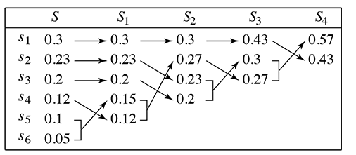
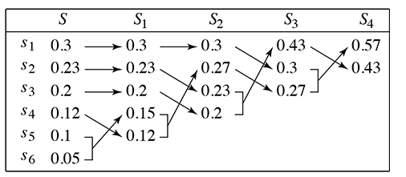

errata
教科書正誤表
-
p.11，8行目，誤：前節では→
正：前章では
-
p.12，9行目，誤：前節の大阪→
正：前章の大阪
-
p.13，1行目，誤：前節の金沢→
正：前章の金沢
-
p.13，3行目，誤：前節の例→
正：前章の例
-
p.13，16行目，誤：前節の符号→
正：前章の符号
-
p.13，16行目，誤：図1.1
→
正：表1.1
-
p.13，17行目，誤：図1.2，図1.3
→
正：表1.2，表1.3
-
p.13，19行目，誤：前節で例として→
正：前章で例として
-
p.14，13行目，誤：ならないが，前節
→
正：ならないが，前章
-
p.17，10行目，誤：このブロックにに，
→
正：このブロックに，
-
p.17，18行目，誤：符号後の最後の文字
→
正：符号語の最後の文字
-
p.18，14行目，誤：s1に，偶数で→
正：s1に，奇数で
-
p.24，5行目，誤：符号語0を割り当て→
正：符号語00を割り当て
-
p.29，7行目，誤：符号語0を割り当てたとき，→
正：符号語0を割り当て，残りの符号語を同じ長さの符号語を割り当てるとき，
-
p.38，15行目，以下の演習3.1の解答を挿入．
[解答] クラフトの符号式の左辺は
2・(1/2)1+2・(1/2)2=(3/2)>1
となり，クラフトの不等式を満たさない．
-
p.38,39，解答 3.1, 3.2, 3.3, 3.4 の番号をそれぞれ
3.2, 3.3, 3.4 に変更．
-
p.40，1 行目，誤：c7 = 2, c1 = 1
→
正：c7 = 2, c8 = 1
-
p.41，13 行目，誤：前節
→
正：前章
-
p.51，2 行目，誤：P1≦
P2≦
...
Pq
→
正：誤：P1≧
P2≧
...≧
Pq
-
p.53，16 行目，誤：sq-j,sq-j+1がを合
→
正：sq-j,sq-j+1を合
-
p.54，10 行目，誤：L'j-i
→
正：L'j-1
-
p.55，全体，
誤：X1
→
正：X'1
誤：X2
→
正：X'2
誤：Xα
→
正：X'α
誤：lα
→
正：l'α
-
p.57，図4.13，
誤

↓
正

-
p.63，最下行，誤：
→
正：
-
p.80，15 行目，誤：Sn
→
正：Sn
-
p.81，5,6 行目，誤：Sn
→
正：Sn
Updated in July 19, 2018,
information theory,
Yamamoto Hiroshi